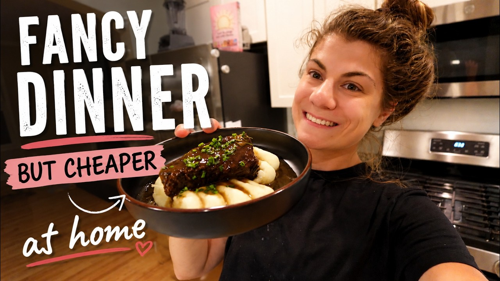

Serves 4 · Cook about 3 to 3 1/2 hours braising at 300°F (hers went 3 hr 15 min), plus prep, searing, and sauce reduction
| Course | Main Dish |
| Categories | Beef, Potatoe |
| Collections | Karissa Stevens |
| Source | Karissa Stevens – YouTube |
| Notes | see “Notes” below |

Reconstructed from the video's narration (spoken recipe) — the video's description is a blurb with no recipe. Quantities and steps below are only those actually stated on camera; see "Gaps in this export" for what wasn't specified.
3 1/2 lb chuck roast, cut into 4 generous pieces
Salt and black pepper
3 Tbsp olive oil
1 white onion, quartered
4 carrots, peeled and roughly chopped
4 celery stalks, roughly chopped
1 whole head of garlic, peeled and roughly chopped
4 Tbsp butter (for the vegetables)
2 cups red wine (nothing fancy)
4 cups beef broth
3 large sprigs rosemary
4 Tbsp butter (added with the rosemary)
All of the strained braising liquid
2 Tbsp cornstarch
1/4 cup cold water
4 russet potatoes (rule of thumb: 1 potato per person)
4 Tbsp butter
Salt, to preference
Black pepper
Milk (plain)
Chopped chives
Preheat the oven to 300°F, with a rack on the lowest setting so the pot fits.
Cut the chuck roast into 4 pieces and season all sides with salt and pepper.
Heat 3 Tbsp olive oil in a Dutch oven (stovetop-to-oven safe) until hot. Sear the beef on all sides, then remove to a plate.
Turn the heat to low. Add 4 Tbsp butter to the pan with the celery, carrot, and onion, plus a touch of salt and pepper. Turn the heat back up to medium and cook until the vegetables have good color.
Add the garlic and cook about 1 minute more, until fragrant.
Add 2 cups red wine and scrape up the browned bits from the bottom of the pan. Let it cook down a couple of minutes.
Add 4 cups beef broth. Return the beef and any juices from the plate.
Add 3 large rosemary sprigs and another 4 Tbsp butter. Put the lid on.
Transfer to the oven and braise at 300°F for about 3 to 3 1/2 hours (check around the 2 1/2-hour mark), until the beef is very tender and falling apart.
Gently remove the beef (it will want to fall apart — take your time).
Ladle the braising liquid and vegetables through a fine sieve into a saucepan, pressing to extract all the juices. Discard the vegetables.
Simmer the strained liquid over high heat until reduced by half (about 10 minutes).
Mix 2 Tbsp cornstarch with 1/4 cup cold water until dissolved. Pour into the sauce while stirring, and cook until thickened.
Cook the russet potatoes (peel/boil as usual), then drain.
Add 4 Tbsp butter, salt to taste, pepper, and milk.
Whip with a hand mixer (not a hand masher) until fluffy.
Plate the potatoes, top with a piece of beef, spoon over the sauce, and finish with chopped chives.
The point of the recipe is turning a cheap cut (chuck roast, about $23) into a steakhouse-style meal; a better cut can be substituted.
Season lightly at each stage ("every layer of the dish").
She keeps the mashed potatoes deliberately simple because the beef and sauce carry the flavor; a piping bag is just for looks — a spoon is fine.
Gap in this export: Prep time and total time
Gap in this export: Amounts of salt and pepper throughout
Gap in this export: How the potatoes are cooked (boil time, whether peeled) and how much butter/milk beyond "4 Tbsp butter" and unmeasured milk
Gap in this export: Exact braising time (given as a ~3 to 3 1/2 hour range; hers ran 3 hr 15 min)